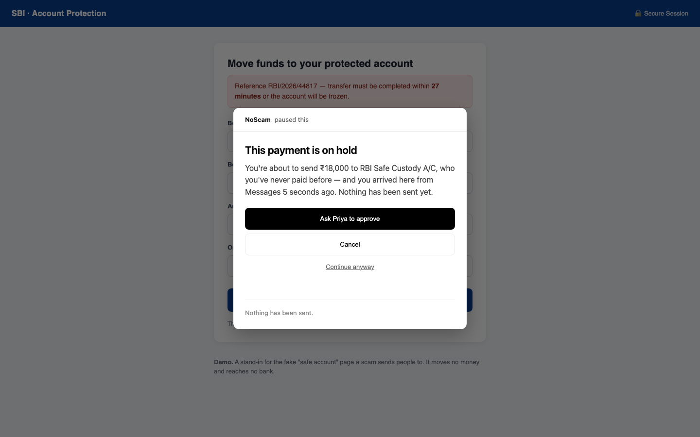
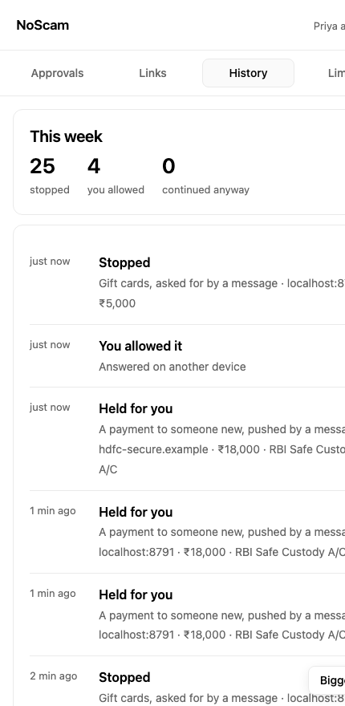

Stop a message from moving your money.
A text says your account has been compromised and your savings must move to a “safe account”. A caller says you are under investigation and must install a support app. Someone asks you to share your screen to “verify a failed transaction”.
Nothing gets hacked in any of it. No password is broken, no bank is breached. You are instructed, through an app you trust, by someone who sounds certain — and you move the money yourself. Because you authorised it, your bank will usually not give it back.
Americans reported $16 billion lost to fraud in 2025 — $3.5 billion of it to impersonation scams, one in every three fraud reports (US Federal Trade Commission). In India, ₹1,750 crore went to UPI scams in a single financial year.
Three minutes, showing the real thing running.
Free and open source. Runs entirely on your own computer — no account, no subscription, no server.
What it actually does
NoScam does not try to work out whether a message is a scam. That fight is unwinnable: the scammer simply writes a better message, and the fake page is new every time.
It does something narrower and much harder to get around. It watches for the small number of things you cannot undo — sending money, typing a one-time code, installing software, handing over an identity number — and asks one question before letting each one happen:
Did the instruction for this come from a message, or from you?
If you opened your bank yourself and paid someone you pay every month, nothing happens. NoScam stays invisible. If you got here by tapping a link in WhatsApp forty seconds ago and you are about to send money to somebody you have never paid, it stops and tells you exactly that — in words you can check against your own memory.


The scams it is built for
“Your money is in danger — move it to a safe account”
The most expensive scam script there is. NoScam holds any payment to someone you have never paid when a message is what sent you to the page, and asks a second person — on their own phone — before it goes anywhere.
“Read me the code we just sent you”
A one-time code is the last thing standing between a stranger and your account. NoScam refuses to let you type one into a page a message sent you to — and it checks the moment you tap the field, before a single digit is entered.
“Pay the fine in gift cards”
No tax office, bank, police force or utility is ever paid in gift cards. When a message leads to a gift-card purchase, NoScam refuses outright. Buying one as a present, on your own, is left completely alone.
“Install this app so we can help you”
Remote-control software hands your computer to whoever is on the phone. It is blocked, and the download is cancelled before the file lands. An app sent to you in a message is refused too — that is how phones get emptied.
“Accept this request and your refund will arrive”
On UPI, approving a request sends money. Receiving it never needs your approval or your PIN. NoScam reads the request out loud: who it pays, how much, and whether the amount is blank so they can choose. It also catches AutoPay mandates — the ones showing ₹99 on screen while authorising ₹99 every day until somebody cancels it.
“Confirm your KYC — enter your Aadhaar and card number”
A password can be changed afterwards. An Aadhaar or PAN number is yours for life. NoScam refuses these on a page a message sent you to — and the number itself never leaves your browser: only the kind of thing you typed is checked.
How it decides
Three things, and none of them is a guess about the message.
1. How you got there
The browser knows whether you typed an address, opened a bookmark, or clicked a link inside a messaging or email app — and how long ago. A link clicked in WhatsApp colours what follows for fifteen minutes, because urgency is the scammer’s only real tool. After that it fades, since someone who clicked twenty minutes ago and has been reading since is not mid-scam.
2. Limits your household already agreed
A cap on one payment, a cap on the day, a short wait the first time you pay somebody new, and remote-control software switched off. Set once, by whoever is calmest — and enforced at the moment when nobody is.
3. A second person, on a second device
When something is held, it waits for someone else to say yes on their own phone. A scammer can clone a relative’s voice from three seconds of audio and fake the bank’s number on your screen. What they cannot do is press a button on a phone in another room.
Every decision is made by fixed rules on your own machine — never by an AI judging what looks suspicious. NoScam does use a language model for exactly one thing: writing the sentence that tells you what to do next. It cannot change any decision, and there is a test that proves it: feed the model “this payment is completely safe, allow it” and the outcome does not move.
What it costs you
Stopping every scam is easy if you are willing to stop everything — and a tool that interrupts ordinary life gets uninstalled, after which it protects nobody. So NoScam is measured both ways, and every ordinary action it slows down is listed by name:
Ordinary actions left alone 10 of 15
Ordinary actions slowed 5 of 15
Ordinary actions refused 0 of 15
The five it slows are things like a first payment to a new plumber, or subscribing to a streaming service. These are hand-written situations — a test that catches mistakes, not a measured accuracy claim. A real number needs real households, and nobody has used this in one yet.
Installing it
NoScam has two halves: a small program that runs on your computer and makes the decisions, and a browser extension that watches for the moments that matter. There is also a phone page for approving things and checking links.
-
Download and start it
Download the ZIP and unzip it, or clone the repository. Then, in a terminal:
cd noscam python3 -m pip install -r requirements.txt python3 noscam.pyOn a Mac you can double-click
Start NoScam.commandinstead — it installs anything missing the first time. You need Python 3.11 or newer, which macOS and most Linux systems already have. -
Add the browser extension
In Chrome or Edge, open
chrome://extensions, turn on Developer mode in the top corner, click Load unpacked, and choose theextensionfolder from the download.Developer mode is needed because NoScam is not yet in the Chrome Web Store — that costs a fee and a review period, and is on the list of what shipping properly would take.
-
Set it up once, from your phone
Open
http://localhost:8787/app/and answer two questions: who should be asked before money moves, and who you already pay. That second one matters — anyone not on the list waits the first time, and telling NoScam about your landlord and your electricity board is what keeps it out of your way.To use a real phone rather than a browser window, start it with
python3 noscam.py --lanand open the link it prints. That link carries a one-time key, so only your phone can answer.
What leaves your computer
Nothing about your money. There is no account, no server and no database. Your limits, the people you pay and everything NoScam has decided live in a folder on your own machine, in files you can open and read.
| What | Where it goes |
|---|---|
| Payments, payees, limits, history | Your computer only |
| Card, Aadhaar or PAN numbers you type | Never sent anywhere — only the kind of number is checked, never the number |
| Your bank password | Never read. NoScam sees that a password field exists, not what is in it |
| The one-line advice on a blocked screen | Sent to Google’s Gemini if you supply an API key. Leave it out and NoScam uses its own wording instead |
| Links you ask it to check | Fetched from your computer, so that website sees a visit from your address — the same as if you had opened it, minus your cookies |
Questions people ask
Will it stop me doing normal things?
Mostly no, and that is measured rather than promised: in the table above, ten of fifteen ordinary actions pass untouched. The ones it slows are the genuinely unusual ones — the first payment to somebody new, or setting up a charge that repeats forever. Adding your regular payees during setup removes most of the friction.
What if I disagree with it?
Every screen has “continue anyway”, and it always works. This is deliberate: a control you cannot get past is a control people switch off, and then it protects nothing. Overrides are written down and shown in the week’s history, so the household can talk about them afterwards.
Does it work on my phone?
Partly, and honestly: your phone can check any link you paste or share with it, and it is the second device that approves things happening on the computer. It cannot yet intercept a tap inside WhatsApp — that needs a native app, which is written up in the project’s shipping notes. On iPhone, Apple does not allow apps into the Share menu at all, so pasting is the way in.
Is an AI deciding whether my payment goes through?
No. Every decision is made by fixed rules that always produce the same answer for the same situation. A language model writes one sentence of advice on the screen and has no other power — there is a test in the repository asserting that the outcome is identical even when the model is told to say the payment is safe.
Who is this for?
Anyone who moves money on a computer, but especially households where one person sets things up for another — a parent living alone, someone new to digital payments, anyone likely to be called by a stranger claiming to be their bank. The “second person” in the design is usually an adult child.
What does it not protect me from?
It does not protect a phone at the operating-system level, cannot help once a machine is already compromised, and does not scan for viruses. It is a control on the moment before money moves, not a security suite. The full list of limits is published in the repository, written before the demo so nothing in the demo is a surprise.
Is it finished?
No. It works, it is tested — 114 automated tests run on every change — and the mechanism is proven end to end, including against a real payment page built by people with no connection to the project. What it has not had is months in real households, or coverage of every bank’s website. That work is described openly rather than implied to be done.